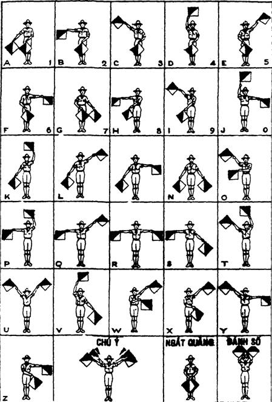

Ký hiệu MORSE
Là những chữ số được thay thế bằng những dấu chấm (.) và gạch (-). Nó được sử dụng bằng nhiều phương pháp và hình thức như âm thanh, ánh sáng, khói, hình ảnh... theo một quy ước nhất định.
Tuy rằng ngày nay ít người sử dụng ký hiệu MORSE để truyền đi những bức điện văn, nhưng nếu các bạn không có những máy móc thông tin hiện đại, mà trong tay chỉ có máy phát tín hiệu thông thường, hay các bạn muốn gửi đi một thông tin bằng đèn pin... theo một quy ước nhất định.
Các ký hiệu chữ và số của vần MORSE như sau:
A.-
B -...
C -.-.
D -..
E.
F..-.
G --.
H....
I..
J.---
K -.-
L.-...
M --
N -.
O ---
P.--.
Q --.-
R.-.
S...
T -
U..-
V...-
W.--
X -..-
Y -.--
Z --..
1.----
2..---
3...--
4....-
5.....
6 -....
7 --...
8 ---..
9 ----.
0 -----
Mẫu tự SEMAPHORE
